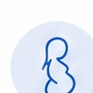
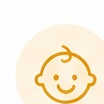
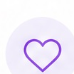

Поддержка для вас
и вашей семьи в ЛНР
Сервисы и информация о возможностях в сфере здравоохранения, планирования семьи и поддержки родителей. Найдите то, что важно именно вам.
Или выберите свою ситуацию ниже

Выберите жизненную ситуацию

02 / БЕРЕМЕННОСТЬЯ уже беременнаИнформация для пациентов Луганского перинатального центра.Перейти на сайт центра ↗
03 / РОДИТЕЛЬСТВОУ меня есть ребёнокПрограммы и занятия для детей в навигаторе дополнительного образования ЛНР.Смотреть программы ↗
04 / ЗНАКОМСТВАХочу семью и детейЗнакомьтесь и общайтесь в отдельном сервисе VK Знакомства.Открыть VK Знакомства ↗Полезные материалы
Смотреть каталогбез сложных терминов
родителей и семьи
что ещё нужно проверить
ВСЁ В ОДНОМ МЕСТЕ
Каталог поддержки
Краткие ориентиры по услугам и возможностям. Условия и доступность уточняйте в первоисточнике перед обращением.
Пока ничего не нашлось
Попробуйте другой запрос или выберите «Все темы».
Это информационный прототип. Здесь нет записи на приём или гарантии предоставления услуги. Региональные инициативы других субъектов РФ не представлены как действующие меры ЛНР.
ЛЕНТА ОТКРЫТОГО ИСТОЧНИКА
Новое от Минздрава ЛНР
Последние публикации загружаются напрямую с официального сайта. Для полного текста вы перейдёте на страницу ведомства.
Тексты подготовлены DeepSeek по открытым официальным источникам и не заменяют информацию ведомства. Дата подготовки указана выше.
ПРОЗРАЧНОСТЬ ДАННЫХ
Откуда берётся информация
Платформа соединяет официальные материалы и дополнительные тематические справочники. Открывая сторонний ресурс, проверяйте регион, стоимость и актуальность сведений.
ПРОСТОЙ ПОДХОД
Меньше поисков.
Больше ясности.
Мы собрали частые вопросы из интервью с жителями и превратили их в понятные первые шаги. Платформа не заменяет врача или официальное решение ведомства — она помогает подготовиться к разговору с ними.
Перейти к каталогу ↗Найдите свою ситуацию
Планирование, беременность, родительство или поиск поддержки.
Посмотрите возможный маршрут
Куда обратиться сначала и какие вопросы задать специалисту.
Проверьте первоисточник
На каждой подтверждённой карточке есть ведомство, дата проверки и прямая ссылка.
ВАЖНО ПОМНИТЬ
Ваш путь — ваше решение.
У каждого человека и каждой семьи своя история. Здесь нет «правильного» выбора и давления: только информация, которая помогает принимать решения в своём темпе.
Выбрать маршрут ↗ЧАСТЫЕ ВОПРОСЫ
Полезно знать
Если не нашли ответ, начните с профильной организации или официального ведомства по месту жительства.
Можно ли узнать здесь точный размер выплаты?+
Размеры, условия и порядок оформления меняются и зависят от вашей ситуации. Мы подсказываем, где проверять информацию: на Госуслугах и в Социальном фонде России.
Можно ли записаться к врачу через платформу?+
Пока нет. Это информационный прототип: он помогает определить первый шаг. Возможность записи и доступность специалистов уточняйте в своей поликлинике или женской консультации.
Подходят ли материалы партнёрам и мужчинам?+
Да. Вопросы здоровья, обследований, выплат и заботы о ребёнке касаются обоих родителей. Выбирайте ситуацию, которая подходит вам.
Все перечисленные услуги доступны в ЛНР?+
Нет. Мы отдельно обозначаем общие федеральные направления и рекомендации по обращению. Идеи из других регионов не означают, что такие программы уже действуют в ЛНР.